头像跳转公众号
使用目标账号的真实原生名片，制作对应的头像入口。
查看操作示意GIF
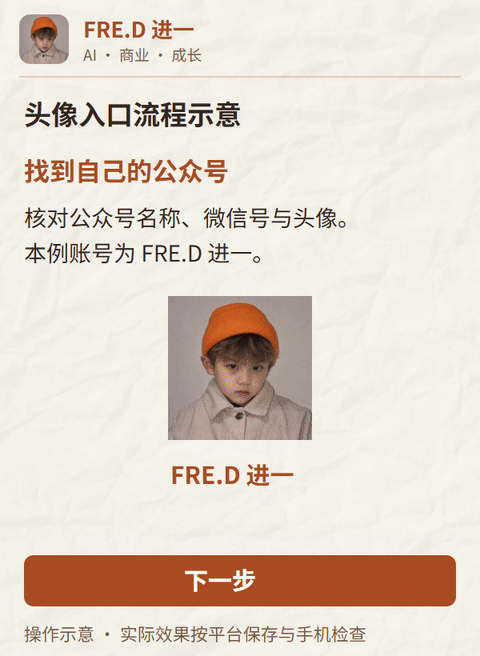
小鱼FRED · 50个组件，先看动图，再挑一个交给 AI。纸纹、暖橙和橙帽 Fred，贯穿每一段演示。
使用目标账号的真实原生名片，制作对应的头像入口。

打开信封抽出信纸，再收回重看。
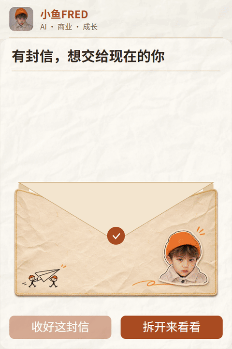
翻到背面阅读，再翻回正面。
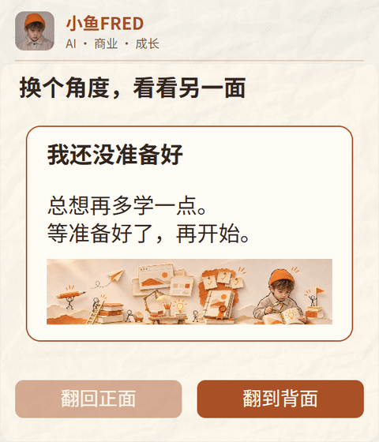
用按钮移动远近景，观察不同位移。
控制唱片旋转，体验视觉播放状态。
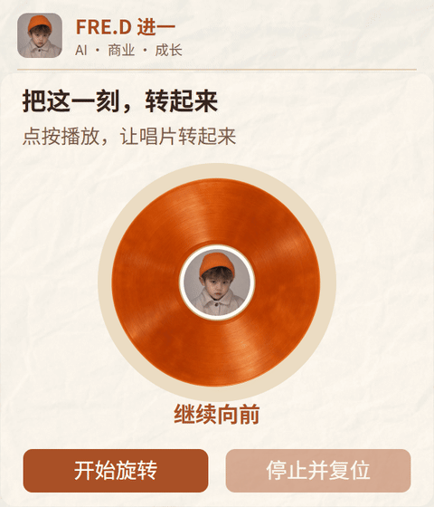
点标签抽出信息条，再收回。
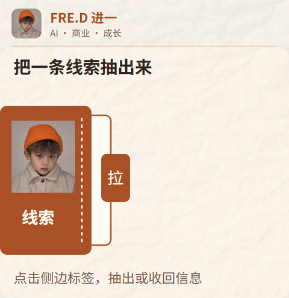
沿时间线依次展开节点与信息。
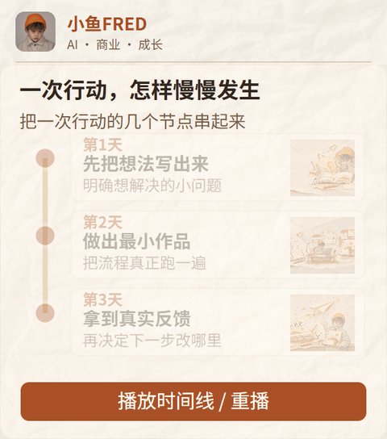
点开窗户看内容，合上后可以重新打开。
来回切换，在同一位置比较前后变化。
在同一幅画面中放大细节，再回到全景。
在固定画面里点开一段短答案。
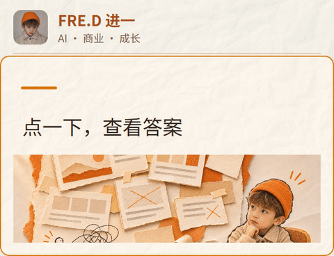
分条展开内容，再恢复遮挡。
点选位置照亮局部，也可查看全景。
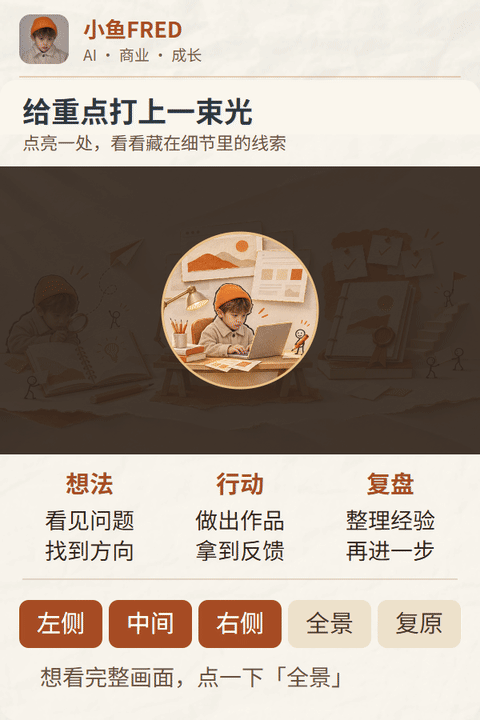
点开一块面板，其余面板收窄。
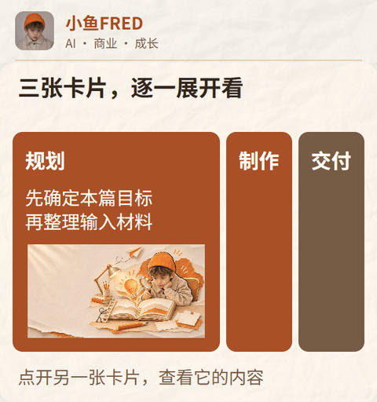
点击播放，看碎片逐块拼合。
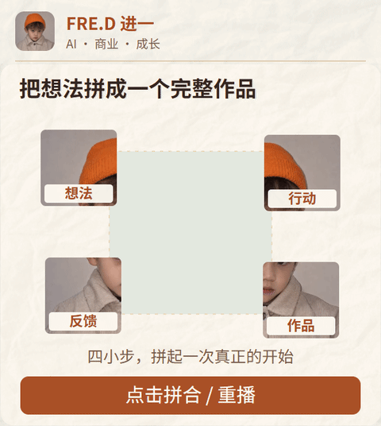
点燃粒子礼花，显示祝福，再次播放。
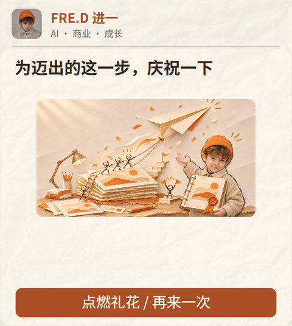
点开不同节点查看说明，再返回总图。
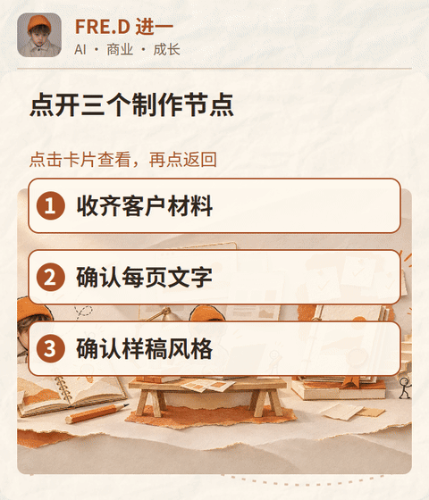
短卡片循环展示，末张可回到第一张。
依次揭开内容，结尾持续保留。
按住画面查看答案，松开恢复。
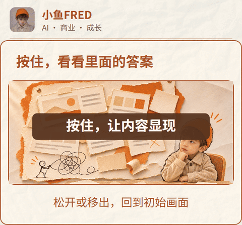
按住让卡片轮播，松手停在当时的内容。
选择一个答案，查看反馈，再返回重选。
沿着选择走到结局，再从起点尝试另一条路。
点击播放，看图形沿路线移动。
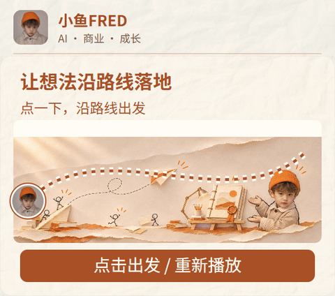
让短句逐字出现，结束后可以重播。
点击播放柱形变化，示例采用演示数据。
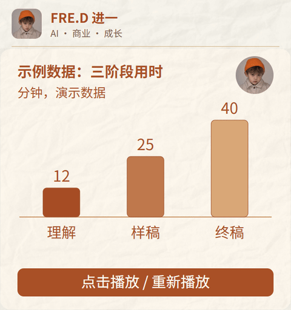
线条逐渐画出，完成后保持完整。刷新页面可重看。
切换或横向浏览配图，把几张作品放在同一个位置。
按信息关系组织标题、步骤、引用和短表。
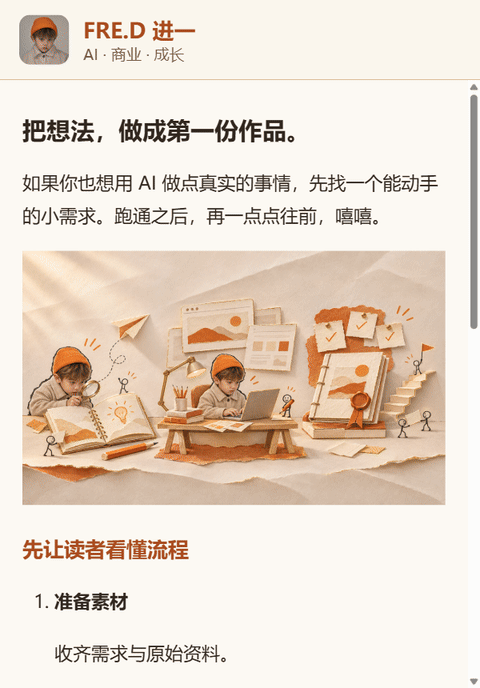
在秀米中配置展开、开窗、长按与局部热区等效果。
SVG互动、数据图表与原生图文排版。
切换标签，在同一画面中查看对应图文。
依次完成操作步骤，也可返回前一步。
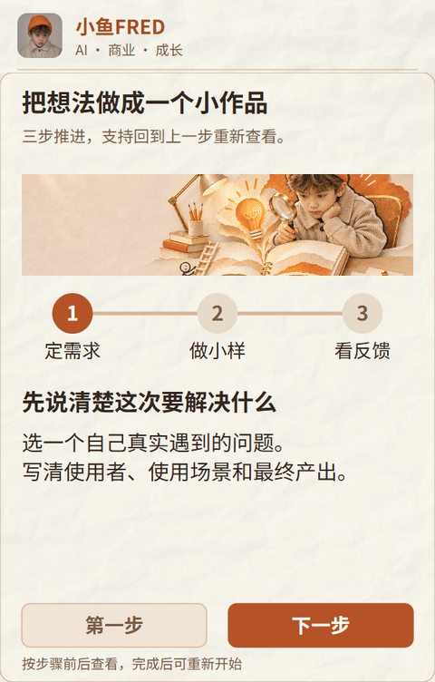
逐题选择，答完后查看本次得分与反馈。
选择多个选项，再统一提交并查看反馈。
逐项勾选事项，查看完成进度。
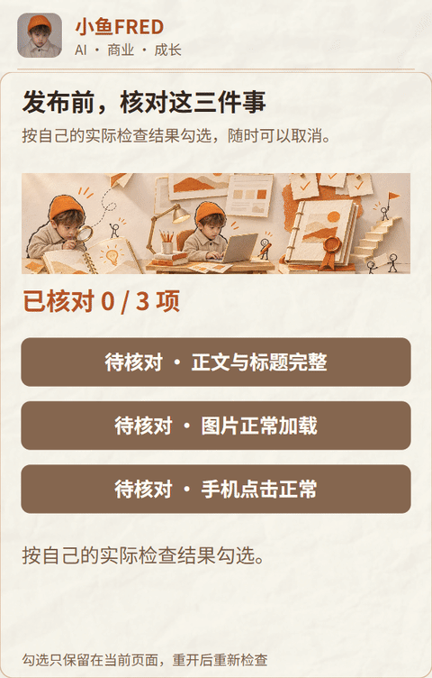
按两列内容点击配对，查看连线结果。
用真实目标与完成值展示环形进度。
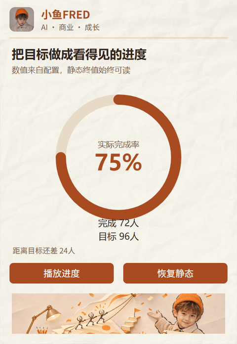
按顺序查看各项增减与最终合计。
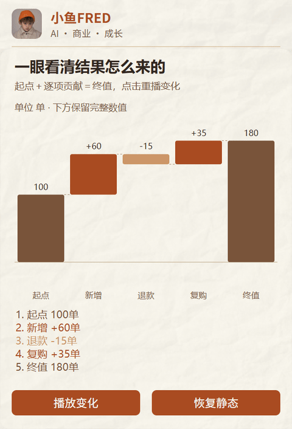
按阶段展示真实数量与转化关系。
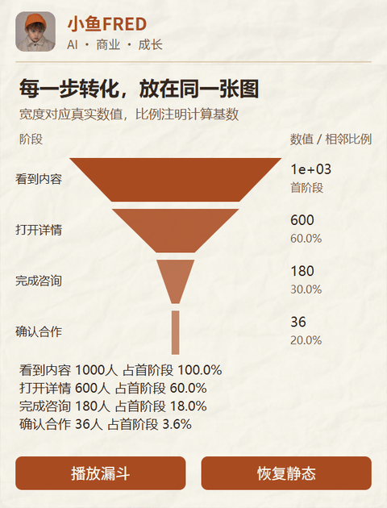
在统一量程下比较多个维度的数据。
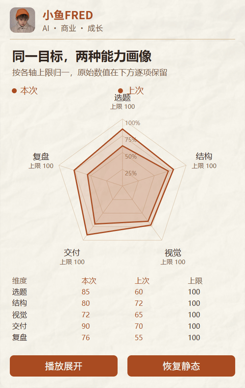
按角色分栏，查看流程交接与当前步骤。
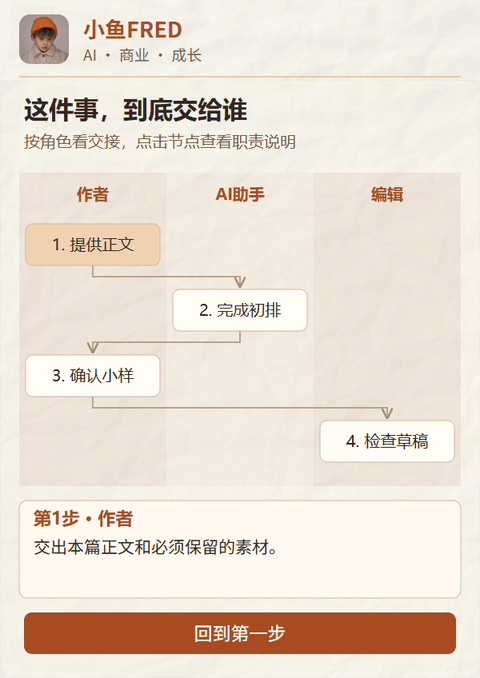
播放短句弹幕，保留静态可读内容。
按页翻看图文，再返回前页。
按顺序选择卡片，排完三项查看结果。
在窄屏中横向查看完整表格。
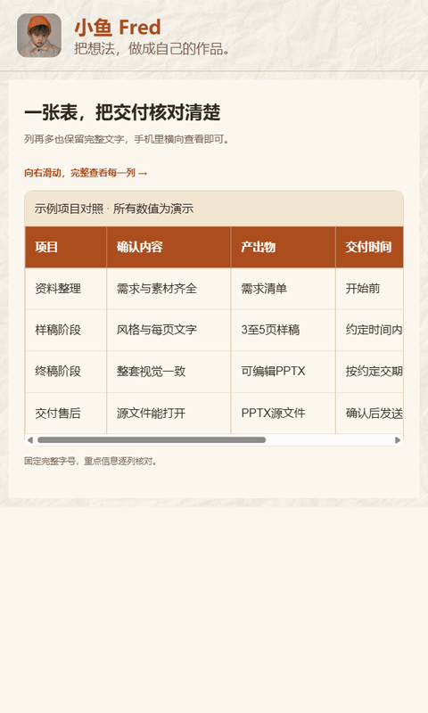
用原生文字呈现人物对话与问答。
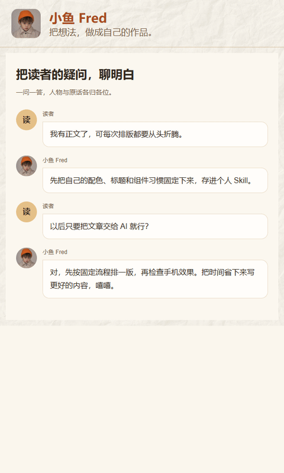
把图片、注释与对应正文排在一起。
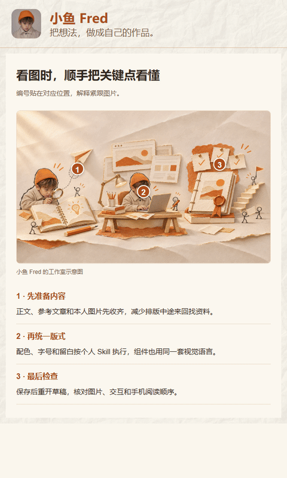
通过图文层级和跨栏组织长内容。
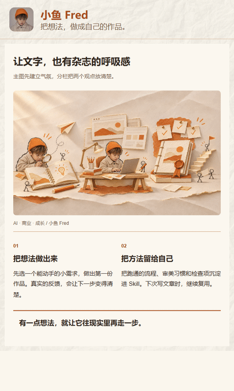
逐项展开常见问题，保持纵向阅读。
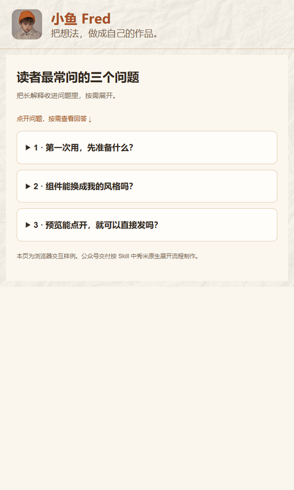
用封面与原生视频入口承接播放内容。
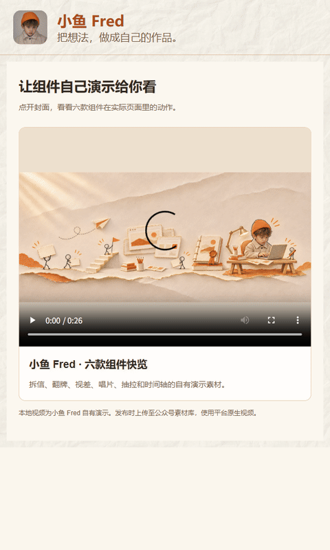